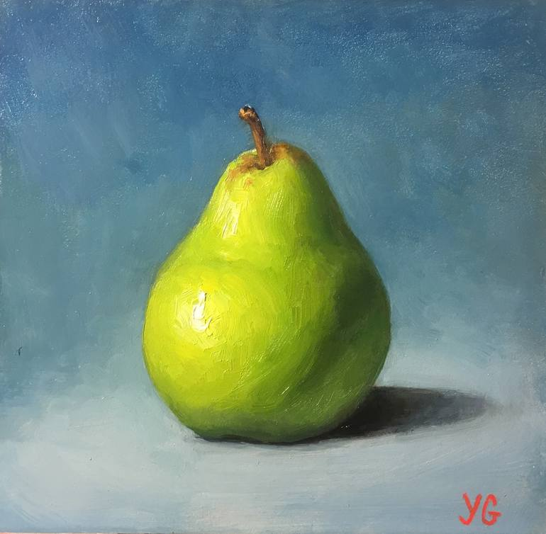

Interactive Map
This map uses a custom Mapbox basemap style (designed in Mapbox Studio), geocoded hometown locations, and a Folium web map with category-based icons, popups, and a legend.
Open it directly here: pearland_hometown_map.html
Written Reflection
1. Design Inspiration
My basemap design was inspired by three images: a muted oil painting of a pear, a soft green floral artwork on an ivory background, and a coastal marsh landscape at golden hour. The pear felt especially fitting since the project focuses on Pearland, so the connection was both literal and personal. I leaned into green not only because of that connection, but also because green is genuinely my favorite color. Instead of using bright or pastel greens, I chose a soft monochrome sage palette. My original plan involved lighter pastel tones, but they didn’t show up well on screen and felt washed out against roads and labels. The monochrome direction felt calmer and easier on the eyes.
The floral artwork influenced my decision to use a warm ivory land base, which gives the map a paper-like, composed quality instead of a harsh digital look. The coastal marsh image helped guide my water tones and layered greens, grounding the palette in the Gulf Coast landscape. For roads, I used darker sage tones for motorways and primary roads to maintain hierarchy, while keeping local roads white with subtle casing. Labels were styled in a muted green-gray rather than black to reduce contrast and keep everything within the same color family. Overall, I aimed for a cohesive, nature-inspired design that felt intentional and balanced.
2. Cartographic Challenges
One of the main cartographic challenges was designing the map to work across multiple zoom levels. At smaller scales, roads became too dark and visually heavy, and some layers overlapped in ways that made the map feel cluttered. I adjusted road weights and colors several times before finding a balance that maintained hierarchy without overpowering the design. I also turned off some minor road levels and neighborhood labels to simplify the map when zoomed out. This helped keep the overall look clean and readable.
Labels were another challenge. Some were too bold at certain scales, while others disappeared when zooming in or out. It took several rounds of adjusting size, color, and visibility settings to make the labeling feel consistent. The legend was also tricky, especially when trying to avoid duplicate categories and make it visually match the rest of the map. Balancing clarity and aesthetic restraint required more iteration than I expected.
3. Technical Challenges
The technical side of the project was more difficult than I initially anticipated. Writing and modifying the Python script to integrate my custom Mapbox style into a Folium map involved multiple syntax and indentation errors. I also struggled with generating a clean legend and customizing marker icons without creating duplicates or breaking the script.
I used AI tools, including Claude Sonnet, to help generate parts of the code and troubleshoot errors. However, the responses were not always accurate. Some color values were wrong, loops were misplaced, and I encountered repeated error messages while running the script. I had to slow down and actually read through the code to understand what each section was doing. Fixing those issues helped me feel more confident in modifying the script rather than just copying and running it.
Overall, this project strengthened both my design thinking and my technical skills. It pushed me to make intentional stylistic decisions while also becoming more comfortable debugging and adjusting Python code on my own.
Design Inspiration


Project Files & Submission Items
These links point to the files included in my repository for Lab 6.
- Published Mapbox style URL: mapbox_style_url.txt
- CSV dataset: hometown_locations.csv
- Python script: hometown_map.py
- Final interactive map (HTML): pearland_hometown_map.html